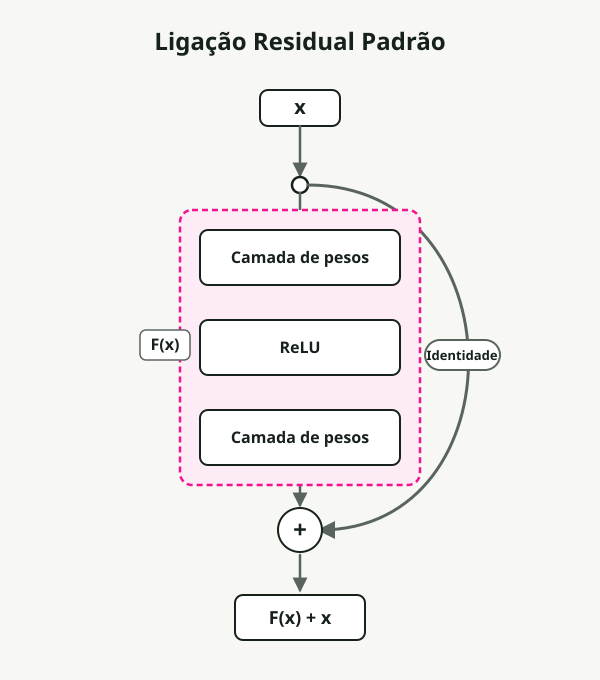
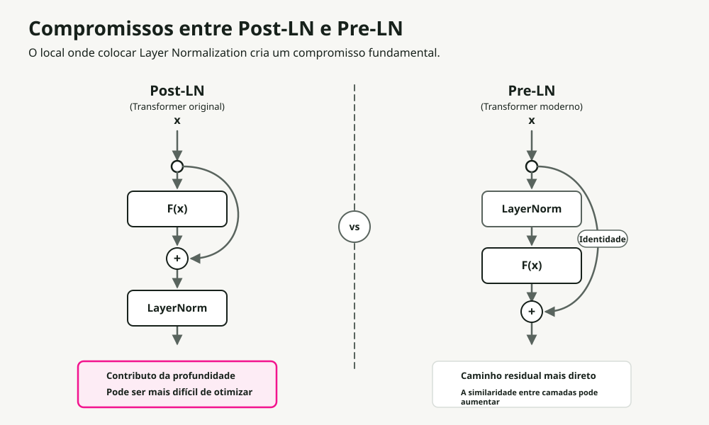
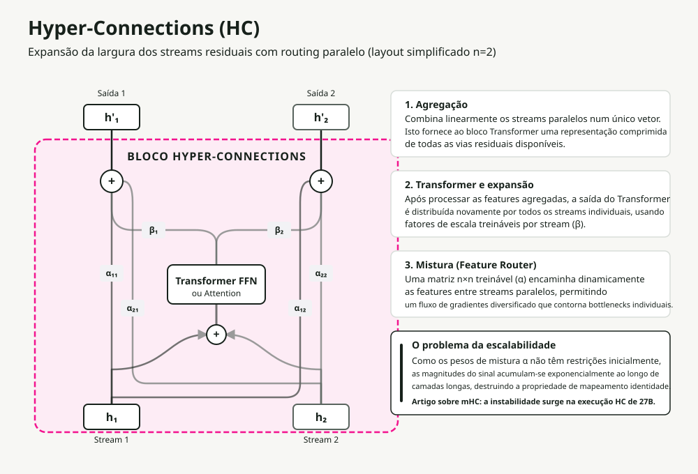
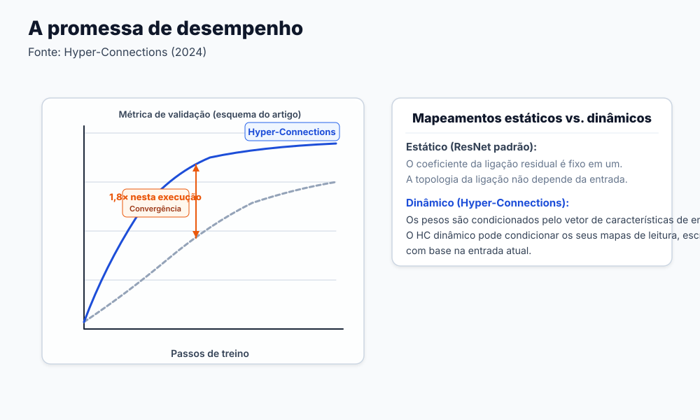
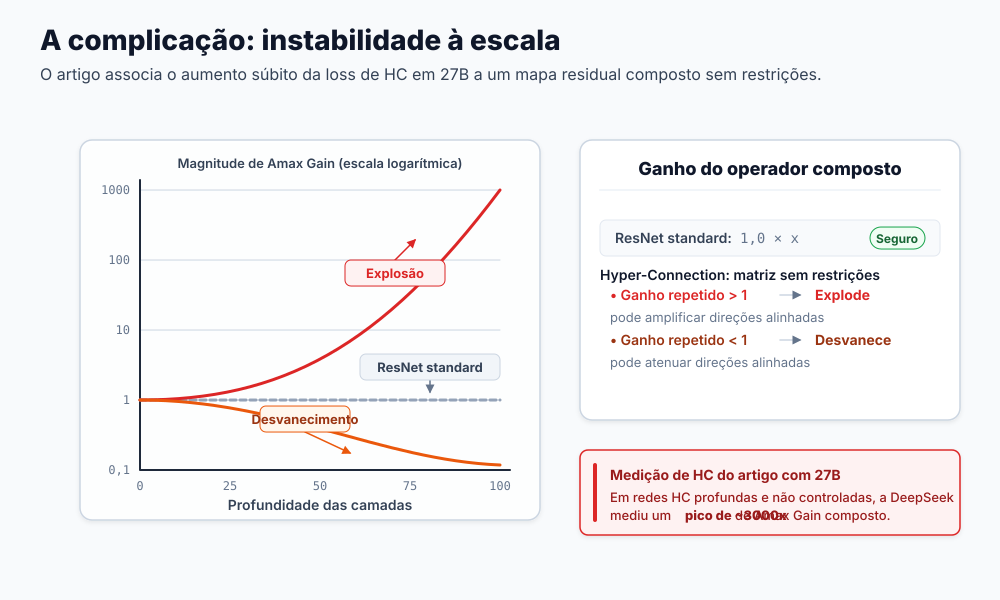
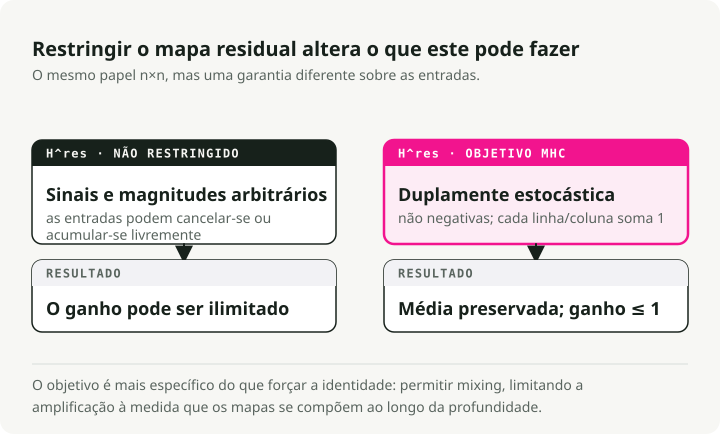
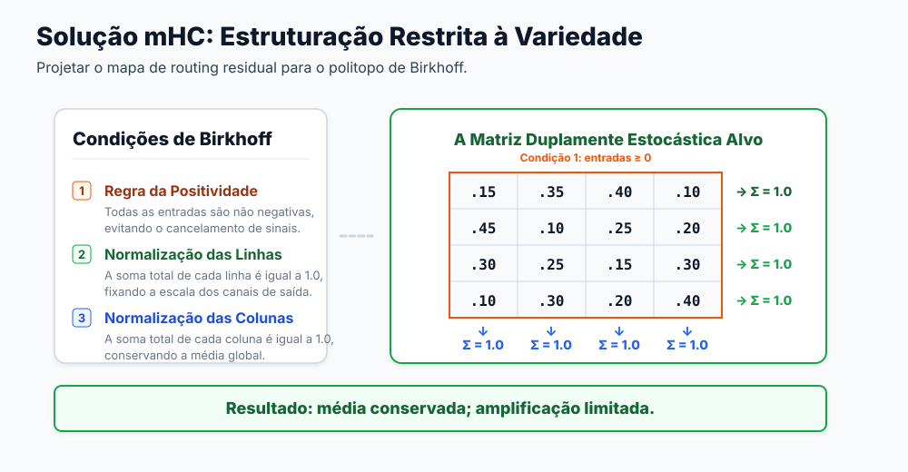
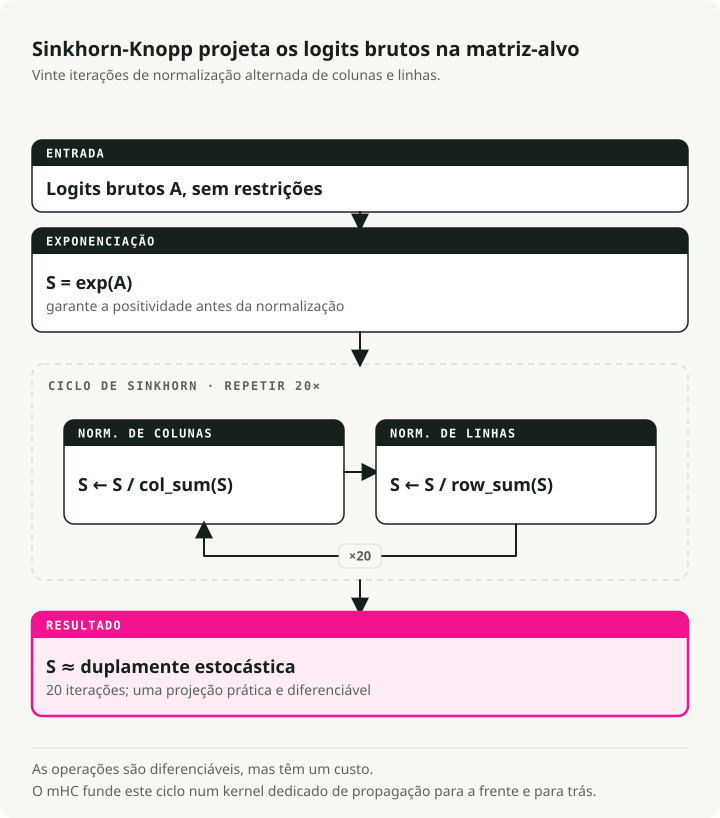
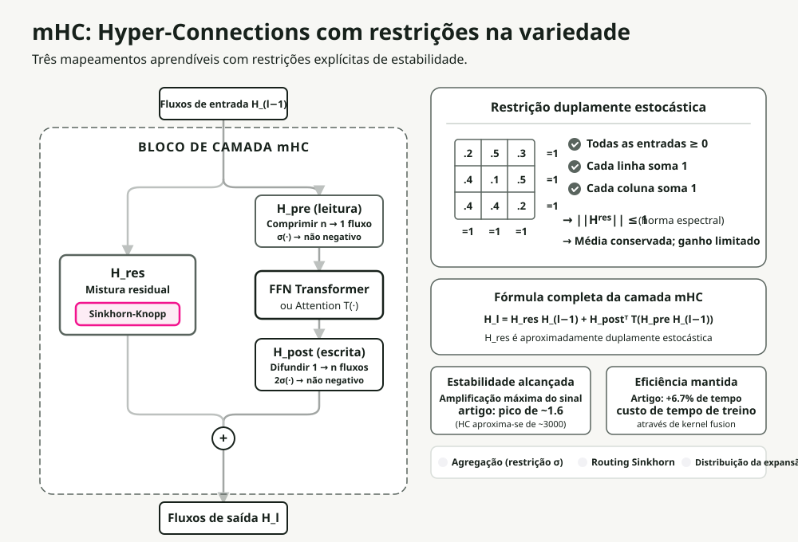

Tradução automática
Este artigo foi traduzido automaticamente a partir da versão original em inglês.
Hyper-Connections Constrangidas à Variedade (mHC): explicação do dimensionamento residual do DeepSeek
A aprendizagem profunda moderna assenta na ligação residual. Após uma década a empilhar camadas cada vez mais profundas, os investigadores da DeepSeek colocaram uma questão diferente: e se escalássemos a largura em vez disso? A resposta deles, Manifold-Constrained Hyper-Connections (mHC), resolve um problema de estabilidade antigo no dimensionamento em largura.
Neste artigo, vou percorrer a evolução desde os resíduos básicos até ao mHC, explicando porque foi necessário cada passo e como a solução da DeepSeek funciona realmente à escala.
Resumo: Hyper-Connections expandem os fluxos residuais em vários fluxos paralelos para uma convergência mais rápida, mas quebram o mapeamento identidade que mantém o treino estável. O mHC restaura a estabilidade ao restringir as matrizes de mistura ao Politopo de Birkhoff (matrizes duplamente estocásticas) usando o algoritmo diferenciável de Sinkhorn-Knopp. Resultado: 4 fluxos paralelos com apenas 6,7% de overhead de treino.
Porque é que as ligações residuais funcionam
Antes de chegarmos ao que o mHC corrige, precisamos de perceber em que é que ele se baseia.
O problema da profundidade
Empilhar mais camadas deveria aumentar a capacidade de um modelo. Na prática, redes muito profundas tornam-se mais difíceis de treinar. A capacidade existe. O que falha é a otimização baseada em gradientes: os gradientes desaparecem (encolhem para perto de zero) ou explodem (crescem sem limite) à medida que se propagam por muitas camadas.
A solução residual
O artigo ResNet introduziu uma correção elegante. Em vez de aprender um mapeamento direto, aprende-se o resíduo, a diferença relativamente à identidade:

O truque é o atalho identidade. Quando a função residual F(x) produz zero, a camada torna-se uma passagem perfeita. Daqui resultam duas consequências:
- Autoestrada de gradiente: os gradientes fluem diretamente pelo atalho, contornando o desaparecimento.
- Otimização fácil: se a identidade for ótima, a rede limita-se a aprender F(x) → 0.
Esta única alteração arquitetural tornou treináveis redes com centenas de camadas.
A complicação dos Transformers: posicionamento da Layer Normalization
Os Transformers introduziram uma nova variável: onde colocar a Layer Normalization (LN). A decisão parece pequena e não é.

| Variante | Posicionamento da LN | Vantagem | Limitação principal |
|---|---|---|---|
| Post-LN | Depois do bloco residual | Alta capacidade do modelo | Desaparecimento do gradiente: a LN no caminho principal reescala os gradientes em cada camada |
| Pre-LN | Antes do bloco residual | Excelente estabilidade | Colapso da representação: as features tornam-se semelhantes entre camadas |
A arquitetura ResiDual tentou resolver isto com caminhos residuais duplos, um Pre-LN para estabilidade e um Post-LN para capacidade. Ainda assim, continua a haver apenas um único fluxo residual. E se fosse possível ter vários fluxos paralelos?
Hyper-Connections: a revolução da largura
Hyper-Connections (HC) seguiram uma via diferente. Em vez de apenas adicionar profundidade, expandem a largura do fluxo residual.

O que é um "fluxo"?
Nos transformers padrão, os embeddings dos tokens de entrada formam um único vetor de dimensão \(d\) que representa as features do token. Esta sequência de vetores única é o "fluxo residual" que atravessa todos os blocos.
Em Hyper-Connections, um fluxo é uma das \(n\) instanciações paralelas deste estado.
Como é que os obtemos? No início da rede, o embedding de entrada inicial é replicado \(n\) vezes (onde \(n\) é a "taxa de expansão", tipicamente 4). O estado oculto padrão de dimensão \(d\) torna-se uma "matriz oculta hiper" de dimensão \(n \\times d\).
Estes \(n\) fluxos idênticos atravessam as camadas transformer da rede, onde são agregados, roteados e expandidos de forma diferente pelos mecanismos abaixo. Por isso, divergem imediatamente e capturam trajetórias de representação distintas.
Mecanismos centrais
Em vez de um único caminho residual, HC mantém \(n\) fluxos paralelos a atravessar toda a rede. Em cada bloco transformer, executam-se três operações, cada uma controlada por pequenos pesos aprendíveis:
- Agregação (\(H_{pre}\), pré-mapeamento): os \(n\) fluxos de entrada são comprimidos num único vetor para o bloco transformer, usando uma matriz aprendível \(H_{pre}\). Cada fluxo é multiplicado por um peso de importância aprendível, pelo que isto funciona como um filtro de entrada.
- Expansão (\(H_{post}\), pós-mapeamento): depois do bloco transformer central (Attention ou MLP), a sua saída é difundida para \(n\) fluxos separados usando uma matriz aprendível \(H_{post}\). Funciona como uma porta de saída, com cada fluxo escalado por um peso aprendível único.
- Mistura (roteamento entre fluxos): os fluxos recém-expandidos fundem-se com os fluxos residuais originais. Uma matriz aprendível \(n \\times n\) de "roteador de features" (\(\\mathbf{H}^{res}\)) decide como a informação de cada fluxo se espalha pelos outros, polinizando cruzadamente as features antes da camada seguinte.
A matriz de mistura H é o controlador de tráfego: encaminha features entre fluxos com base em padrões aprendidos. A informação flui de forma muito mais rica do que através de um único caminho residual.
Os resultados

HC converge aproximadamente 1,8× mais depressa do que os resíduos padrão. Os fluxos paralelos dão aos gradientes mais caminhos e permitem à rede manter representações mais diversas.
O problema
Há um problema crítico: HC é instável à escala.
Porque é que Hyper-Connections falham
A flexibilidade que dá poder ao HC é também o que o faz falhar. Destrói o mapeamento identidade que torna os resíduos treináveis em primeiro lugar.

A matemática da instabilidade
Nos resíduos padrão:
Quando \(F(x) \\rightarrow 0\), isto é identidade: \(x_{l+1} = x_l\). O sinal atravessa sem alteração.
Em Hyper-Connections, o caminho residual inclui uma multiplicação matricial:
Ao longo de L camadas, o sinal torna-se:
Se os valores em H se desviarem, mesmo que ligeiramente, de 1.0, este produto ou:
- Explode: valores > 1.0 acumulam-se exponencialmente.
- Desaparece: valores < 1.0 decaem exponencialmente.
A equipa da DeepSeek mediu isto com a "Amax Gain Magnitude", que acompanha o rácio máximo entre a magnitude do sinal de saída e a do sinal de entrada ao longo de todas as camadas. Em HC padrão, isto atinge ~3000 em redes profundas. A partir daí, o treino deixa de ser viável.

O problema central: matrizes sem restrições podem assumir qualquer valor (números negativos, magnitudes grandes, qualquer coisa). Precisamos de uma forma de as manter no conjunto "bem comportado", onde preservam a energia do sinal da mesma forma que a identidade.
A solução mHC: restrições geométricas
A ideia central do mHC é que é possível ter roteamento flexível e estabilidade se restringirmos as matrizes de mistura a uma estrutura matemática específica: o Politopo de Birkhoff, o conjunto de todas as matrizes duplamente estocásticas, onde cada linha e coluna soma 1 e todos os elementos são não negativos.

As três restrições
O mHC restringe a matriz de mistura H^res para que seja duplamente estocástica: todas as entradas não negativas, cada linha e cada coluna a somar exatamente 1. Isso impõe três propriedades ao mesmo tempo:
| Restrição | Regra | Porque importa |
|---|---|---|
| Positividade | Todos os elementos > 0 | Impede a oscilação de sinal que desestabiliza os gradientes |
| Soma da linha = 1 | Cada linha soma 1.0 | Normaliza a contribuição de saída; nenhum fluxo domina |
| Soma da coluna = 1 | Cada coluna soma 1.0 | Normaliza a distribuição de entrada; todos os fluxos contribuem de forma justa |
O resultado crítico: Energia de entrada = energia de saída. A magnitude do sinal é preservada em profundidade na rede, o que elimina o problema da explosão exponencial.
Esta restrição também tem consequências matemáticas úteis:
- Norma espectral ≤ 1: a norma espectral (o maior valor singular) limita a amplificação do sinal. Matrizes duplamente estocásticas são matematicamente não expansivas.
- Fechado sob multiplicação: compor matrizes duplamente estocásticas produz outra matriz duplamente estocástica.
- Média ponderada: a operação torna-se uma combinação convexa (uma média ponderada em que os pesos somam 1) das entradas, preservando a magnitude total do sinal.
O algoritmo de Sinkhorn-Knopp
O desafio: como é que se força uma matriz aprendível a ser duplamente estocástica mantendo-a diferenciável? O algoritmo de Sinkhorn-Knopp faz isso. É uma projeção iterativa que converge para a forma duplamente estocástica em apenas alguns passos.

Uma explicação com um exemplo concreto:
Passo 1: positividade. Aplicar exp() aos pesos brutos para que todos os elementos sejam estritamente positivos:
Raw Matrix → Positive Matrix
[-0.5 2.1 0.8] [0.6 7.9 2.2] Σ=10.7
[ 1.3 -4.0 1.9] exp [3.7 0.02 6.7] Σ=10.4
[ 0.1 0.6 -0.2] → [1.1 1.8 0.8] Σ=3.7
Passo 2: normalização por linha. Dividir cada linha pela sua soma:
Positive Matrix → Row Normalized
[0.6 7.9 2.2] [0.25 0.65 0.10] Σ=1.0
[3.7 0.02 6.7] /row [0.35 0.01 0.64] Σ=1.0
[1.1 1.8 0.8] → [0.30 0.45 0.25] Σ=1.0
Σ=0.9 Σ=1.1 Σ=0.99 ← columns not yet =1
Passo 3: normalização por coluna. Dividir cada coluna pela sua soma:
Row Normalized → Doubly Stochastic
[0.25 0.65 0.10] [0.28 0.45 0.27] Σ=1.0
[0.35 0.01 0.64] /col [0.40 0.09 0.51] Σ=1.0
[0.30 0.45 0.25] → [0.32 0.46 0.22] Σ=1.0
Σ=1.0 Σ=1.0 Σ=1.0 ← converges in few iterations
Passo 4: iterar. Repetir os passos 2-3 durante t_max iterações (tipicamente 20) até à convergência.
Todo o processo é diferenciável, pelo que os gradientes fluem durante o treino. Sinkhorn-Knopp também é barato, acrescentando overhead mínimo ao ciclo de treino.
A inicialização também importa.
Ajustes na inicialização
Para fazer o treino arrancar de forma estável:
- Sigmoid em vez de Tanh: os coeficientes mantêm-se não negativos e limitados (0 a 1).
- Multiplicador escalar 2: sigmoid produz ~0.5 na inicialização. Multiplicar por 2 dá um peso inicial de ~1.0, alinhado com o comportamento de identidade.
Arquitetura completa do mHC
Juntando tudo:

O fluxo em cada bloco:
- Entrada: \(n\) fluxos residuais paralelos entram na camada.
- Agregação (\(H_{pre}\)): os \(n\) fluxos combinam-se num único vetor através de uma soma ponderada usando a matriz \(H_{pre}\). No mHC, estes pesos de agregação são restringidos localmente (\(\\sigma(\\cdot)\)) para serem não negativos, o que evita escalamento não natural e interferência destrutiva.
- Computação: o bloco Transformer padrão (Attention ou MLP) processa o único vetor agregado.
- Expansão (\(H_{post}\)): a única saída do bloco é difundida e escalada para \(n\) fluxos de atualização separados usando a matriz \(H_{post}\), que também é restringida a ser não negativa.
- Mistura (roteamento \(H_{res}\)): os fluxos partilham informação através de uma matriz de mistura \(n \\times n\) \(\\mathbf{H}^{res}\). No mHC, esta matriz é estritamente restringida ao Politopo de Birkhoff (duplamente estocástica), pelo que a energia do sinal é conservada.
- Saída: os \(n\) fluxos atualizados avançam para a camada seguinte sem explodirem nem desaparecerem.
A diferença principal face ao HC padrão: todas as operações de mistura e agregação passam por uma restrição de Sinkhorn ou normalização semelhante. É isso que mantém o sinal estável ao longo de centenas de camadas.
Infraestrutura: tornar isto prático
Expandir para n=4 fluxos cria overhead real. Cada fluxo precisa da sua própria memória, e Sinkhorn adiciona 20 iterações por camada. A equipa da DeepSeek contornou isso com várias otimizações.
Fusão de kernels
Usando TileLang, fundiram iterações de Sinkhorn com multiplicações em precisão mista em kernels CUDA especializados. Isso reduz as viagens de ida e volta à memória de alta largura de banda (HBM), que normalmente é o verdadeiro bottleneck no hardware moderno.
Recomputação seletiva
Guardar todos os estados intermédios de Sinkhorn para backpropagation faria explodir o uso de memória. Em vez disso, o mHC:
- Liberta as ativações intermédias após o forward pass.
- Recalcula-as on-the-fly durante o backward pass.
Um agendamento DualPipe modificado sobrepõe essa recomputação com a comunicação de gradientes, pelo que o custo de recomputação fica maioritariamente escondido.
Resultados
Com estas otimizações, a taxa de expansão n=4 corre com apenas 6,7% de overhead de treino face à baseline. O roteamento topológico complexo torna-se prático à escala.
Validação empírica
As garantias teóricas traduzem-se realmente em melhorias reais?
A dinâmica bruta de treino é clara. Sem restrições, redes profundas que usam Hyper-Connections padrão veem a magnitude do sinal (Amax Gain) explodir para cerca de 3.000, com grande instabilidade e picos frequentes na loss. Com a restrição duplamente estocástica imposta, o mHC mantém a Amax Gain perto de ~1,6 ao longo de todo o treino.
Mas a estabilidade não interessa se o desempenho do modelo degradar. Para testar a capacidade representacional, a equipa avaliou um modelo mHC-27B (construído sobre a arquitetura DeepSeek-V3) face às baselines ResNet padrão e HC sem restrições. Em benchmarks de raciocínio como GSM8K e MATH, o mHC vence de forma consistente. Os ganhos de desempenho do roteamento por fluxos paralelos são reais e, com restrições de Sinkhorn, é finalmente possível treinar estes caminhos residuais muito largos sem que a execução de treino se desintegre.
Trade-offs e considerações
mHC não é uma solução sem custo. Há três pontos que vale a pena destacar:
- Overhead computacional: 6,7% é pouco para o que oferece, mas continua a ser custo extra face aos resíduos padrão.
- Complexidade de implementação: não se escreve isto em PyTorch puro e se espera que seja rápido. O baixo overhead exige kernels CUDA personalizados e afinados.
- Viés indutivo forte: a restrição duplamente estocástica impõe conservação estrita do sinal. Se a sua tarefa precisar genuinamente de amplificação do sinal em profundidade na rede, esta restrição vai opor-se ativamente.
Principais conclusões
- As ligações residuais funcionam por causa do mapeamento identidade: a capacidade de fazer passar sinais sem alteração.
- Hyper-Connections escalam a largura em vez da profundidade, permitindo convergência mais rápida através de roteamento multi-fluxo.
- A flexibilidade do HC destrói o mapeamento identidade, causando explosão do sinal em redes profundas.
- mHC restringe as matrizes de mistura ao Politopo de Birkhoff, garantindo matematicamente a estabilidade.
- Sinkhorn-Knopp torna a restrição diferenciável, permitindo treino end-to-end.
- O trabalho de infraestrutura (fusão de kernels, recomputação seletiva) é o que torna tudo isto prático.
Para profissionais: se está a atingir limites com o dimensionamento em profundidade e tem acesso ao desenvolvimento de kernels personalizados, o mHC é uma forma fundamentada de escalar capacidade através da largura mantendo o treino estável.
Referências
- mHC: Manifold-Constrained Hyper-Connections - Xie et al. (DeepSeek)
- Deep Residual Learning for Image Recognition - He et al. (ResNet)
- Hyper-Connections - Artigo original de HC
- TileLang - Framework de otimização de kernels CUDA
- DualPipe - Agendador de paralelismo em pipeline para DeepSeek-V3
- ResiDual - Arquitetura de caminho residual duplo